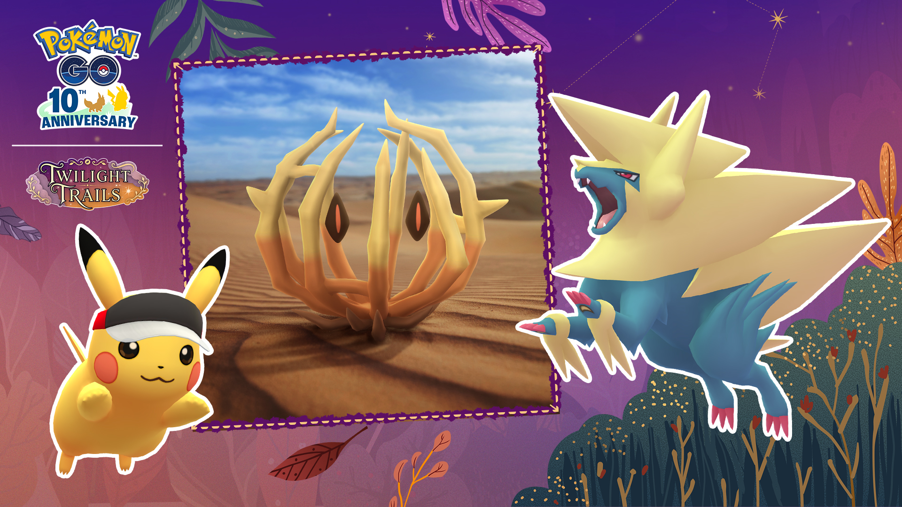
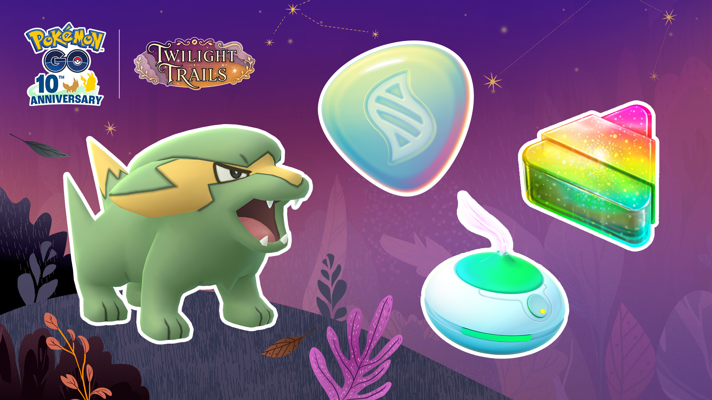

포켓몬 GO 그푸리 처음 만나는 법, 가을 소풍 GO패스 패스 태스크와 향로 출현 기간 10월 13일부터
10월 13일 오전 10시, 포켓몬 GO에 그푸리가 처음으로 등장해요. 가을 소풍: 파트너와 함께 이벤트가 열리는 날인데요, 이런 날엔 이름보다 어디서 어떻게 만나는지가 먼저 궁금해지죠. 새 포켓몬은 늘 이름만 반갑고 길이 헷갈리잖아요 ㅎㅎ
공지에 명시된 그푸리 길은 GO패스 패스 태스크, 향로, 필드리서치 보상 인카운터 세 갈래입니다. 이벤트 시작 전에 미리 챙겨둘 것만 순서대로 풀어볼게요~
그푸리는 포켓몬 GO에서 언제부터 어떻게 만날 수 있나요?
그푸리는 한국시간 2026년 10월 13일 오전 10시부터 10월 19일 오후 8시까지 열리는 가을 소풍: 파트너와 함께 이벤트에서 포켓몬 GO에 처음 등장하는 신규 포켓몬이에요.

가운데 덤불 같은 모습이 이번에 처음 등장하는 새 포켓몬 그푸리예요.
이미지 출처: 포켓몬 GO 공식 소식 · 네이버 본문엔 받아서 재업로드 권장
공지에 적힌 길은 아래 세 가지예요. 공지의 야생 출현 목록에는 그푸리가 적혀 있지 않으니, 어느 길로 갈지부터 정해두시면 좋아요.
| 만나는 길 | 어떻게 하나요 | 공지에 적힌 내용 |
|---|---|---|
| GO패스 | 패스 태스크 완료 | 그푸리가 등장할 수 있어요 |
| 향로 | 향로 사용 | 이벤트 두 구간 모두 출현 목록에 포함돼요 |
| 필드리서치 | 과제 보상 인카운터 | 두두·썬더라이·그푸리 등 이벤트 테마 포켓몬이에요 |
GO패스 패스 태스크로 그푸리를 만나려면 어떻게 하나요?
GO패스의 패스 태스크를 완료하면 그푸리가 등장할 수 있다고 공지에 적혀 있어요.
- 무료 'GO패스: 가을 소풍'은 10월 13일 오전 10시에 자동으로 지급돼요.
- 유료 'GO패스 디럭스'는 공지 표기로 $4.99, 6랭크가 포함된 'GO패스 디럭스 + 6랭크'는 $6.99예요.
- 디럭스를 사면 무료 보상과 디럭스 보상을 모두 받아요.
가격은 공지 각주에 «USD 또는 동일한 가치의 현지 통화»로 적혀 있어요. GO패스 리워드는 공지상 한국시간 10월 21일 오후 8시에 만료되고요. 무료 패스에도 이벤트 테마 포켓몬을 만나는 보상이 있고, 디럭스에는 추가 만남과 메가 에너지 같은 보상이 더 붙는 구성인데요, 그푸리만 놓고 보면 과제 목록이 열리기 전까진 결제를 서두를 이유는 없죠.
GO패스 화면 한 장이면 어디까지 올렸는지 바로 보여요.
향로로 그푸리를 만나려면 언제 어떤 걸 써야 하나요?
향로는 10월 13일 오전 10시부터 10월 19일 오후 8시까지 언제 켜도 그푸리가 나올 수 있고, 10월 16일 오전 10시를 기준으로 같이 나오는 포켓몬만 바뀌어요.
| 향로 사용 기간 | 같이 나오는 포켓몬 |
|---|---|
| 10월 13일 10:00 ~ 10월 16일 10:00 | 포니타(가라르의 모습)*, 통통코*, 썬더라이*, 돌살이*, 그푸리 |
| 10월 16일 10:00 ~ 10월 19일 20:00 | 가디(히스이의 모습)*, 토중몬*, 썬더라이*, 목도리키텔*, 그푸리 |
표의 *는 운이 좋으면 색이 다른 포켓몬을 만날 수 있다는 공지 표시예요. 표에서 *가 붙지 않은 건 그푸리뿐이라, 색이 다른 모습은 공지에 안내되지 않았다고 보시면 돼요. 그푸리는 앞뒤 두 구간에 다 들어 있어서 날짜를 놓칠까 조급해하지 않으셔도 되겠네요.

향로 한 개가 이번 이벤트 사냥의 시작이에요~
이미지 출처: 포켓몬 GO 공식 소식 · 네이버 본문엔 받아서 재업로드 권장
향로는 얼마나 지속되고, 이벤트 보너스는 뭐가 있나요?
향로는 일반적으로 60분 동안 지속되고, 이벤트가 진행 중일 때는 더 오래 지속될 수 있다고 공식 헬프센터에 안내돼 있어요.
- 이벤트 GO패스 랭크 10(티어 1) 혜택으로 이벤트 기간 향로 효과가 2시간이 돼요(산책향로 제외).
- 이벤트 내내 색이 다른 썬더라이가 나올 확률이 올라가요.
- 10월 16일 오전 10시부터 19일 오후 8시까지는 향로로 색이 다른 가디(히스이의 모습)가 나올 확률도 올라가요.
향로는 여러 개를 이어 켜면 최대 24시간까지 이어 쓸 수 있어서, 가진 향로 수가 곧 그푸리를 만날 시간이거든요. 이벤트 첫날부터 달려볼 분들은 가방부터 한번 털어보시는 게 좋겠죠?
향로를 켜면 맵에 그푸리가 섞여 나오기 시작해요.
필드리서치에서도 그푸리가 나오나요?
필드리서치 보상 인카운터에 그푸리가 들어 있다고 공지에 적혀 있고, 두두·썬더라이 같은 이벤트 테마 포켓몬이 같은 줄에 올라 있어요. 향로나 패스 태스크처럼 따로 준비할 건 없어서, 포켓스톱을 돌다가 받는 과제 보상 칸에 그푸리가 뜨는지 슬쩍 살펴보시는 정도면 충분하죠.
첫 그푸리와 마주친 순간이에요.
공지에 아직 나와 있지 않은 건 뭐가 있나요?
그푸리를 만나는 길로 공지에 명시된 건 앞의 세 가지예요. 아래는 공지만으로는 확인되지 않는 부분이에요.
- 야생 출현 목록에는 그푸리가 적혀 있지 않고, 알·레이드는 공지에 출현 안내 자체가 없어요.
- 어떤 패스 태스크에서 어느 트랙(무료·디럭스)으로 나오는지는 적혀 있지 않아요.
- 이벤트가 끝난 뒤에도 만날 수 있는지는 적혀 있지 않아요.
확인 위치: 10월 13일 이후 인게임 GO패스 화면·오늘의 할 일 · 확인되면 아래에 채워주세요.
| 항목 | 값(확인 후 입력) |
|---|---|
| 그푸리 패스 태스크(과제명·랭크·무료/디럭스) | — |
| 그푸리가 보상인 필드리서치 과제 | — |
이 글은 발행 시점인 10월 9일 공지 기준이라, 시작 전에 안내가 바뀔 수 있다는 점은 감안해 주세요.
자주 묻는 질문
Q. 돈을 안 쓰고도 그푸리를 만날 수 있나요?
향로는 이벤트 기간 출현 목록에 그푸리가 들어 있고, 무료 GO패스도 자동으로 지급되니까 결제 없이 갈 수 있는 길은 열려 있어요. 다만 그푸리가 걸린 패스 태스크가 무료 쪽인지는 공지에 나와 있지 않아서, 지금 가장 분명한 건 향로 쪽입니다.
Q. 이벤트 시작 전인 지금 향로를 써도 그푸리가 나오나요?
그푸리는 이번 이벤트에서 처음 등장하는 포켓몬이라 공지상 첫 등장은 13일 오전 10시부터예요. 향로는 아껴 두셨다가 그날 아침에 켜시는 게 좋아요.
Q. 산책향로로도 그푸리가 나오나요?
공지의 향로 출현 목록은 산책향로가 제외라 그푸리 유인 대상으로 안내되지 않았어요. 2시간 효과도 산책향로는 제외고요. 헬프센터 설명으로도 산책향로는 현실에서 움직일 때만 포켓몬을 끌어오니, 가만히 켜 두는 용도라면 일반 향로가 맞답니다.
Q. 색이 다른 그푸리도 나오나요?
향로 출현 목록에서 다른 포켓몬에는 색이 다른 모습을 뜻하는 *가 붙는데 그푸리에는 붙어 있지 않아요. 색이 다른 그푸리가 있는지는 공지에 언급이 없어서, 지금은 있다 없다 단정하기 어려워요.
그푸리 만나는 법 정리
그푸리는 10월 13일 오전 10시부터 19일 오후 8시까지 GO패스 패스 태스크, 향로, 필드리서치로 만날 수 있고, 이 중 가장 분명한 길은 향로입니다. 저라면 13일 아침에 향로부터 켜 두고, GO패스 과제 목록은 시작하고 나서 보며 정하고 싶거든요. 막상 돌려본 이야기는 이벤트가 시작되면 따로 풀어볼게요. 다들 첫 그푸리 무사히 챙기시길 바랄게요~
✔ 포켓몬 GO 같이 보기 좋은 내용
· 포켓몬고 한글날 이벤트 정리 10월 9일 20시 종료, 출현 11종 루어모듈 향로 컬렉션 챌린지 안농 H
· 포켓몬고 GPS 안 잡힐때 해결방법 위치를 감지하지 못했습니다 오류, 안드로이드 아이폰 순서대로 체크
· 포켓몬고 과사삭벌레 진화 애프룡 단지래플 과미르 사과 사탕 총정리, 과미드라 조건까지
참고한 곳 (2026.10.09 기준)
· 포켓몬 GO 공식 소식 — 가을 소풍: 파트너와 함께
· Pokémon GO 공식 소식(영문)
· 포켓몬 GO 공식 헬프센터 — 향로